Page Contents
Documentation (cocoaDialog 2.2)
The following document provides an overview of how to use cocoaDialog,
as well as the various run modes and commandline options available.
Visit the examples page to see more
practical examples of its use.
(It's really not as complicated as it may seem from this page).
Executing cocoaDialog
Overview
cocoaDialog is run directly from the commandline by executing the
binary file within the .app bundle.
The path to it will be
cocoaDialog.app/Contents/MacOS/cocoaDialog
If cocoaDialog is in your ~/Applications directory,
for example, the executable will be:
~/Applications/cocoaDialog.app/Contents/MacOS/cocoaDialog
From here on we will refer to this binary file as simply
cocoaDialog
Easy way to invoke cocoaDialog
This is a simple wrapper script. Put it somewhere in your $PATH. For example, mine is ~/bin/cocoaDialog, and I have export PATH=$PATH:~/bin in my ~/.bash_profile.
Now from the shell or other scripts, I can just do cocoaDialog to invoke the program.
download this wrapper script
#!/usr/bin/perl
use strict;
use warnings;
my $path = "/Users/markstra/Applications"; # Change this!
my $cd = "$path/cocoaDialog.app/Contents/MacOS/cocoaDialog";
system($cd, @ARGV);
Runmode and options
cocoaDialog is always executed with the following format:
cocoaDialog runmode options
The runmode is always required, and specifies which GUI
control to use.
An example is:
cocoaDialog yesno-msgbox --title "Delete backups"
--text "Delete all the backups?" --informative-text "This cannot be
un-done"
See Run Modes / GUI Controls for a list of available controls.
Return Values / Output
The return value of a control will simply be printed to
stdout.
This makes it trivial to determine the user input in any
shell, programming or scripting language.
In bash you could find it like this:
rv=`cocoaDialog yesno-msgbox --string-output`
echo "User pressed the $rv button"
Controls that return multiple values will print each on its own
line (separated by newlines).
Global Options
The following options can be supplied for any of the run modes
(GUI controls).
| Command |
Arguments |
Description |
| --title |
"string" |
Sets the window's title. |
| --string-output |
|
Makes yes/no/ok/cancel buttons return values as "Yes", "No", "Ok", or "Cancel" instead of integers. When used with custom button labels, returns the label you provided |
| --no-newline |
|
By default, return values will be printed with a trailing newline. This will suppress that behavior. NOTE: when a control returns multiple lines this will only suppress the trailing newline on the last line |
| --width |
integer |
Sets the width of the window. It's not advisable to use this option without good reason, and some controls won't even respond to it. The automatic size of most windows should suffice. |
| --height |
integer |
Sets the height of the window. It's not advisable to use this option without good reason, and some controls won't even respond to it. The automatic size of most windows should suffice. |
| --icon |
"icon" |
The name of the icon to use. If used with --icon-file, this icon will be used as a backup.
Default: no icon. |
| --icon-bundle |
"com.apple.bundle.identifier" |
The bundle identifier of the application to use. Must be used with --icon to specify the icon name to search for in the bundles resource folder. |
| --icon-file |
"/full/path/to/icon.icns" |
The full path to the custom icon image you would like to use. Almost every image format is accepted .jpg .jpeg .png .tiff .icns. If used with --icon, this icon will take precedence and --icon will only be used as a backup. |
| --icon-size |
integer |
The size of the icon. Must be one of: 16, 32, 48, 128, 256. If not specified or an unknown size, defaults to 48. |
| --icon-height |
integer |
The height of the icon. This will override --icon-size. Defaults to: --icon-size. |
| --icon-width |
integer |
The width of the icon. This will override --icon-size. Defaults to: --icon-size. |
| --debug |
|
If you are not getting the results you expect, try turning on this option. When there is an error, it will print ERROR: followed by the error message. |
| --help |
|
Gives a list of options and a link to this page. |
Icons
All dialogs allow you display an icon. In addition to using a custom icon with --icon-file or --icon-bundle, you may also choose from the following icon name and cocoaDialog can locate the icon on your computer for you.
You can also specify that --icon should be used as a backup when also using --icon-file.
addressbook
airport
airport2
application
archive
bluetooth
bonjour/atom
burn/hazard
caution
cd
cocoadialog
computer
dashboard
dock
document
documents
download
eject
everyone
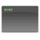
executable

favorite/heart
fileserver
filevault

finder
firewire
folder
folderopen
foldersmart
gear

general
globe
group
help
home
info
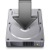
installer
ipod
movie
music
network
notice
package

preferences
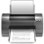
printer
screenshare
search/find
security
sound
stop/x
sync
trash
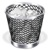
trashfull
update
url
usb
user/person
utilities
widget
Run Modes / GUI Controls
Notes: The right-most button of controls with buttons has
the key-equivalent of enter. Any button with a label "Cancel" has the
key-equivalent of escape.
bubble
|
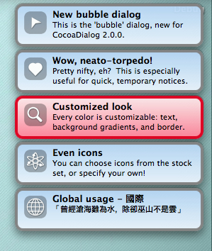
This is a fancy-looking, little bubble dialog window. You can have one
or more displayed at a time. You can use it to display short, temporary
messages to the user.
The bubbles will remain in the upper-right corner until the user clicks them, or they time out.
They will time out in 4 seconds by default, and all of them will close when
the user clicks one. This behavior can be changed with the options below.
Note: The bubble has a fixed size. Any text beyond its capacity
will simply be cut off. This is on the TODO list
for future releases.
returns: nothing. If it's not obvious, note that the program doesn't return until
the bubbles have timed out, or been clicked. If you want your script to continue immediately
after displaying them, it's up to you to make your script do this (most likely by invoking
cocoaDialog as a background process).
Example bubble shell script
|
Options for single or multiple bubbles:
| ‑‑timeout numSeconds |
The amount of time, in seconds, that the bubble(s) will be displayed. Clicking them
will make them closer sooner.
Unlike other dialogs, bubbles time out by default.
Default value is 4.
|
| ‑‑no‑timeout |
Don't time out. By default the bubbles will time out after 4 seconds. With this
option enabled, they will stay visible until the user clicks them. |
| ‑‑alpha alphaValue |
The alpha value (controls transparency) for the bubble(s). A number between 0 and 1.
Default is 0.95.
|
| ‑‑x‑placement placement |
This can be left, right, or center.
|
| ‑‑y‑placement placement |
This can be top, bottom, or center.
|
Options for a single bubble:
| ‑‑text "body of the bubble" |
required. The body text of the bubble. |
| ‑‑title "title of the bubble" |
required. The title of the bubble. |
| ‑‑icon stockIconName |
The name of the stock icon to use. This is
incompatible with --icon-file
Default is cocoadialog
|
| ‑‑icon‑file "/full/path/to/icon file" |
The full path to the custom icon image you would like to use.
Almost every image format is accepted.
This is incompatible with the --icon option.
|
| ‑‑text‑color colorHexValue |
The color of the text on the bubble in 6 character hexadecimal format (like you
use in html). Do not prepend a "#" to this value. Examples: "000000" for black,
or "ffffff" for white.
The default is determined by your system, but should be 000000.
|
| ‑‑border‑color colorHexValue |
The color of the border in 6 character hexadecimal format (like you
use in html). Do not prepend a "#" to this value. Examples: "000000" for black,
or "ffffff" for white.
The default is 808080.
|
| ‑‑background‑top colorHexValue |
The color of the top of the background gradient in 6 character hexadecimal format (like you
use in html). Do not prepend a "#" to this value. Examples: "000000" for black,
or "ffffff" for white.
The default is B1D4F4.
|
| ‑‑background‑bottom colorHexValue |
The color of the bottom of the background gradient in 6 character hexadecimal format (like you
use in html). Do not prepend a "#" to this value. Examples: "000000" for black,
or "ffffff" for white.
The default is EFF7FD.
|
Options for a multiple bubbles:
| ‑‑texts List of bodies for the bubbles |
required. A list of body texts to use in the bubbles.
Example: "This is bubble 1" bubble2 "and bubble 3"
This must have the same number of items as the --titles list.
|
| ‑‑titles List of titles for the bubbles |
required. A list of titles to use in the bubbles.
Example: "Title for bubble 1" "And bubble2" "Bubble 3"
This must have the same number of items as the --texts list.
|
| ‑‑icons List of stock icon names |
The names of the stock icons to use. This is
incompatible with --icon-files. If there are less icon names
provided than there are bubbles, it will use the default for the remaining.
Defaults are cocoadialog
|
| ‑‑icon‑files List of full paths to icon files |
A list of files to use as icons. This is
incompatible with --icons. If there are less icon files
provided than there are bubbles, it will use the default for the remaining.
Look at the Icons section to see how to mix custom
icons with stock icons.
|
| ‑‑text‑colors List of hex colors |
See the single bubble section for details. |
| ‑‑border‑colors List of hex colors |
See the single bubble section for details. |
| ‑‑background‑tops List of hex colors |
See the single bubble section for details. |
| ‑‑background‑bottoms List of hex colors |
See the single bubble section for details. |
| ‑‑independent |
This makes clicking one bubble not close the others. The default behavior
is to close all bubbles when you click one.
|
|
back to runmodes/controls
up to global options
msgbox
|
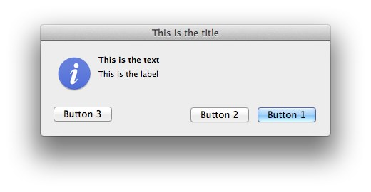
This control provides a generic message box. It allows you to
customize the labels of the buttons. At least one button
(--button1) must be specified. If labels for the
other buttons are not given, the buttons will not appear on the
message box.
Buttons go from right to left.
--button1 is the right-most button.
returns: 1, 2, or 3
depending on which button was pressed; or the label of the button
if the --string-output option is given..
If the dialog times out, it will return 0 or timeout.
Also see the
yesno-msgbox and
ok-msgbox.
Example msgbox shell script
|
Options: (in addition to global options)
| ‑‑text "main text message" |
This is the main, bold message text. |
| ‑‑informative‑text
"extra informative text to be displayed" |
This is the extra, smaller message text. |
| ‑‑float |
Float on top of all windows. |
| ‑‑timeout numSeconds |
The amount of time, in seconds, that the window will be displayed if the user
does not click a button.
Does not time out by default.
|
| ‑‑button1 "label for button 1" |
required. This is the right-most button. |
| ‑‑button2 "label for button 2" |
This is the middle button. |
| ‑‑button3 "label for button 3" |
This is the left-most button. This will not be displayed
if there is no --button2 label specified. |
|
back to runmodes/controls
up to global options
ok-msgbox

This control provides a standard Ok/Cancel message box.
returns: 1 for ok, 2 for cancel
depending on which button was pressed; Ok or
Cancel
if the --string-output option is given.
If the dialog times out, it will return 0 or timeout.
Example ok-msgbox shell script
|
Options: (in addition to global options)
| ‑‑text "main text message" |
This is the main, bold message text. |
| ‑‑informative‑text
"extra informative text to be displayed" |
This is the extra, smaller text. |
| ‑‑no‑cancel |
Don't show a cancel button, only "Ok". |
| ‑‑icon stockIconName |
The name of the stock icon to use. This is
incompatible with --icon-file
Default is no icon.
|
| ‑‑icon‑file "/full/path/to/icon file" |
The full path to the custom icon image you would like to use.
Almost every image format is accepted.
This is incompatible with the --icon option.
|
| ‑‑float |
Float on top of all windows. |
| ‑‑timeout numSeconds |
The amount of time, in seconds, that the window will be displayed if the user
does not click a button.
Does not time out by default.
|
|
back to runmodes/controls
up to global options
yesno-msgbox
|
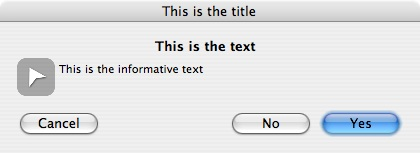
This control provides a standard Yes/No/Cancel message box.
returns: 1 for yes, 2 for no,
3 for cancel
depending on which button was pressed; Yes,
No, or Cancel
if the --string-output option is given.
If the dialog times out, it will return 0 or timeout.
Example yesno-msgbox shell script
|
Options: (in addition to global options)
| ‑‑text "main text message" |
This is the main, bold message text. |
| ‑‑informative‑text
"extra informative text to be displayed" |
This is the extra, smaller text. |
| ‑‑no‑cancel |
Don't show a cancel button. |
| ‑‑icon stockIconName |
The name of the stock icon to use. This is
incompatible with --icon-file
Default is no icon.
|
| ‑‑icon‑file "/full/path/to/icon file" |
The full path to the custom icon image you would like to use.
Almost every image format is accepted.
This is incompatible with the --icon option.
|
| ‑‑float |
Float on top of all windows. |
| ‑‑timeout numSeconds |
The amount of time, in seconds, that the window will be displayed if the user
does not click a button.
Does not time out by default.
|
|
back to runmodes/controls
up to global options
inputbox
|
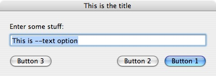
This control provides a one line input box and customizable buttons.
At least one button
(--button1) must be specified. If labels for the
other buttons are not given, the buttons will not appear on the
message box.
Buttons go from right to left.
--button1 is the right-most button.
returns: 1, 2, or 3
depending on which button was pressed; or the label of the button
if the --string-output option is given. On the next
line will be the text provided by the user in the textbox.
On a timeout, it will return 0 or timeout, and the text from
the textbox will not be returned.
Also see the
standard-inputbox.
Example inputbox Perl script
|
Options: (in addition to global options)
| ‑‑text
"initial text" |
This is the initial text in the input box. |
| ‑‑informative‑text
"extra informative text to be displayed" |
This is the text for the label above the input box. |
| ‑‑button1 "label for button 1" |
required. This is the right-most button. |
| ‑‑button2 "label for button 2" |
This is the middle button. |
| ‑‑button3 "label for button 3" |
This is the left-most button. This will not be displayed
if there is no --button2 label specified. |
| ‑‑float |
Float on top of all windows. |
| ‑‑timeout numSeconds |
The amount of time, in seconds, that the window will be displayed if the user
does not click a button.
Does not time out by default.
|
| ‑‑no‑show |
This makes it a secure inputbox. Instead of what the user types,
only dots will be shown.
|
|
back to runmodes/controls
up to global options
standard-inputbox

This control provides a standard input box with "Ok" and "Cancel"
buttons.
returns: 1 for ok, 2 for cancel
depending on which button was pressed; Ok,
or Cancel
if the --string-output option is given. On the next
line will be the text provided by the user in the textbox.
On a timeout, it will return 0 or timeout, and the text from
the textbox will not be returned.
Example standard-inputbox Perl script
|
Options: (in addition to global options)
| ‑‑text
"initial text" |
This is the initial text in the input box. |
| ‑‑informative‑text
"extra informative text to be displayed" |
This is the text for the label above the input box. |
| ‑‑no‑cancel |
Don't show a cancel button. |
| ‑‑float |
Float on top of all windows. |
| ‑‑timeout numSeconds |
The amount of time, in seconds, that the window will be displayed if the user
does not click a button.
Does not time out by default.
|
| ‑‑no‑show |
This makes it a secure inputbox. Instead of what the user types,
only dots will be shown.
|
|
back to runmodes/controls
up to global options
secure-inputbox

This is an alias for running an inputbox with
the --no-show option.
All options available to inputbox are
available to secure-inputbox.
|
back to runmodes/controls
up to global options
secure-standard-inputbox
back to runmodes/controls
up to global options
fileselect
|
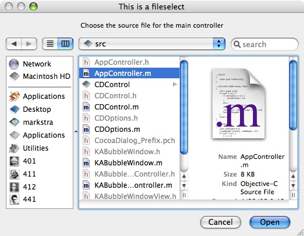
This control provides a file selection window.
returns: the files or directories selected by the user, or
nothing if they cancel.
Example fileselect shell script
|
Options: (in addition to global options)
| ‑‑text "main text message" |
This is the text displayed at the top of the fileselect
window. |
| ‑‑select‑directories |
Allow the user to select directories as well as files.
Default is to disallow it.
|
| ‑‑select‑only‑directories |
Allows the user to select only directories. |
| ‑‑packages‑as‑directories |
Allows the user to navigate into packages as if they were directories, rather than
selecting the package as a file.
|
| ‑‑select‑multiple |
Allow the user to select more than one file.
Default is to allow only one file/directory selection.
|
| ‑‑with‑extensions
list of extensions
|
Limit selectable files to ones with these extensions.
list of extensions should be space separated, and
given as multiple arguments (ie: don't double quote the list).
Example: cocoaDialog fileselect --with-extensions .c .h .m .txt
The period/dot at the start of each extension is optional.
|
| ‑‑with‑directory
directory
|
Start the file select window in directory.
The default value is up to the system, and will usually be
the last directory visited in a file select dialog.
|
| ‑‑with‑file
file
|
Start the file select window with file
already selected.
By default no file will be selected.
This must be used with --with-directory.
It should be the filename of a file within the directory.
|
|
back to runmodes/controls
up to global options
filesave
|
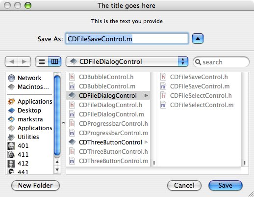
This control provides a file save window, which allows the user to select a file,
or specify a new file.
This dialog allows the user to create directories.
However, if the user specifies a file that
does not yet exist, it will not be created. This is a task for
your script.
returns: the file selected (which may not exist), or
nothing if they cancel.
|
Options: (in addition to global options)
| ‑‑text "main text message" |
This is the text displayed at the top of the filesave
window. |
| ‑‑packages‑as‑directories |
Allows the user to navigate into packages as if they were directories, rather than
selecting the package as a file.
|
| ‑‑no‑create‑directories |
Prevents the user from creating new directories. |
| ‑‑with‑extensions
list of extensions
|
Limit selectable files (including files the user creates) to ones with these extensions.
list of extensions should be space separated, and
given as multiple arguments (ie: don't double quote the list).
Example: cocoaDialog filesave --with-extensions .c .h .m .txt
The period/dot at the start of each extension is optional.
|
| ‑‑with‑directory
directory
|
Start the file save window in directory.
The default value is up to the system, and will usually be
the last directory visited in a file dialog.
|
| ‑‑with‑file
file
|
Start the file save window with file
already selected.
By default no file will be selected.
This must be used with --with-directory.
It should be the filename of a file within the directory.
|
|
back to runmodes/controls
up to global options
textbox

This is a text box with a large text area.
At least one button
(--button1) must be specified. If labels for the
other buttons are not given, the buttons will not appear on the
text box.
Buttons go from right to left.
--button1 is the right-most button.
returns: 1, 2, or 3
depending on which button was pressed; or the label of the button
if the --string-output option is given.
If the --editable option was given, it will print
the contents of the text box following the return value for the
button.
On a timeout, it will return 0 or timeout, and the text from
the textbox will not be returned.
Example textbox Perl script
|
Options: (in addition to global options)
| ‑‑text "main text message" |
This is the text that goes into the text box.
This value overrides --text-from-file.
|
| ‑‑text‑from‑file
filename |
Fills the text box with the contents of
filename
|
| ‑‑informative‑text
"extra informative text to be displayed" |
This is the message above the text box. |
| ‑‑button1 "label for button 1" |
required. This is the right-most button. |
| ‑‑button2 "label for button 2" |
This is the middle button. |
| ‑‑button3 "label for button 3" |
This is the left-most button. This will not be displayed
if there is no --button2 label specified. |
| ‑‑editable |
Makes the text box editable. When this option is set, the
return value for the button will be followed with the contents
of the text box.
|
| ‑‑focus‑textbox |
This option is only useful when --editable
is set. This makes the initial focus on the textbox rather
than the rightmost button.
|
| ‑‑selected |
Selects all the text in the text box.
|
| ‑‑scroll-to
bottom_or_top
|
Where bottom_or_top is one of bottom
or top.
Causes the text box to initially scroll to the bottom or top
if the text it contains is larger than its current view.
Default is top.
|
| ‑‑float |
Float on top of all windows. |
| ‑‑timeout numSeconds |
The amount of time, in seconds, that the window will be displayed if the user
does not click a button.
Does not time out by default.
|
|
back to runmodes/controls
up to global options
progressbar
|
The progress bar is a bit different, and slightly more complex
than the other controls.
It reads input on stdin and displays until it reads an EOF
(or the stop button is pressed).
Input for the progress bar is in the form:
newPercent updated text to be displayed and must
be terminated by a newline.
If you want to leave the current text intact, just provide the new
percent.
newPercent should be a number.
Examples (the first sets new text, the second leaves the old text):
26 We're now at 26%
26
In your code it would like this: "26 We're at 26%\n". That newline is important.
If the --stoppable option was given, it also accepts the following lines:
stop enable and stop disable.
Ideas and help for working with the progressbar in the shell
Example progressbar Perl script
Example progressbar shell script
Python class for working with the progressbar
returns: stopped if the user pressed the stop button and confirmed it,
and stopping is currently enabled).
|
Options: (in addition to global options)
| ‑‑text "initial text to display" |
This is the text that will be initially displayed. |
| ‑‑percent number |
Initial percentage, between 0 and 100, for the progress
bar |
| ‑‑indeterminate |
This option makes the progress bar an animated
"barbershop pole" (for lack of better description). It does
not indicate how far the operations you're performing have
progressed; it just shows that your application/script is
busy. You can still update the text of the label when
writing to cocoaDialog's stdin - and it doesn't
matter what percentage you feed it.
|
| ‑‑float |
Float on top of all windows. |
| ‑‑stoppable |
Show the stop button. |
|
back to runmodes/controls
up to global options
dropdown
|
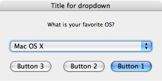
This control provides a dropdown list of items to select from
and customizable buttons.
Values for the dropdown list must be provided.
At least one button
(--button1) must be specified. If labels for the
other buttons are not given, the buttons will not appear on the
message box.
Buttons go from right to left.
--button1 is the right-most button.
returns: 1, 2, or 3
depending on which button was pressed; or the label of the button
if the --string-output option is given.
Returns 4 (for both regular and --string-output)
if the user didn't press a button due to --exit-onchange.
On the following line will be the index (zero-based) of the selected
item, or its label if the --string-output option is
given.
On a timeout, it will return 0 or timeout, and the selected
item will not be returned.
Also see the
standard-dropdown.
Example dropdown Perl script
|
Options: (in addition to global options)
| ‑‑text
"text" |
This is the text for the label above the dropdown box. |
| ‑‑items
list of values
|
required.
These are the labels for the options provided in the dropdown
box.
list of values should be space separated, and
given as multiple arguments (ie: don't double quote the
entire list. Provide it as you would multiple arguments for
any shell program). The first item in the list is always
selected by default.
Example: cocoaDialog dropdown --text "Favorite OS?" --items "GNU/Linux" "OS X" Windows Amiga "TI 89" --button1 "Ok"
|
| ‑‑pulldown |
Sets the style to a pull-down box, which differs slightly
from the default pop-up style. The first item remains visible.
This option probably isn't very useful for a single-function
dialog such as those cocoaDialog provides, but I've included
it just in case it is.
To see how their appearances differ, just try them both. |
| ‑‑button1 "label for button 1" |
required. This is the right-most button. |
| ‑‑button2 "label for button 2" |
This is the middle button. |
| ‑‑button3 "label for button 3" |
This is the left-most button. This will not be displayed
if there is no --button2 label specified. |
| ‑‑exit‑onchange |
Makes the program exit immediately after the selection
changes, rather than waiting for the user to press one of the
buttons. This makes the return value for the button
4 (for both regular output and with
--string-output). |
| ‑‑float |
Float on top of all windows. |
| ‑‑timeout numSeconds |
The amount of time, in seconds, that the window will be displayed if the user
does not click a button.
Does not time out by default.
|
|
back to runmodes/controls
up to global options
standard-dropdown

This control provides a dropdown list of items to select from
and the standard "Ok" and "Cancel" buttons.
Values for the dropdown list must be provided.
returns: 1 for ok, 2 for cancel,
depending on which button was pressed; or Ok or
Cancel
if the --string-output option is given.
Returns 4 (for both regular and --string-output)
if the user didn't press a button due to --exit-onchange.
On the following line will be the index (zero-based) of the selected
item, or its label if the --string-output option is
given.
On a timeout, it will return 0 or timeout, and the selected
item will not be returned.
|
Options: (in addition to global options)
| ‑‑text
"text" |
This is the text for the label above the dropdown box. |
| ‑‑items
list of values
|
required.
These are the labels for the options provided in the dropdown
box.
list of values should be space separated, and
given as multiple arguments (ie: don't double quote the
entire list. Provide it as you would multiple arguments for
any shell program). The first item in the list is always
selected by default.
Example: cocoaDialog dropdown --text "Favorite OS?" --items "GNU/Linux" "OS X" Windows Amiga "TI 89" --button1 "Ok"
|
| ‑‑pulldown |
Sets the style to a pull-down box, which differs slightly
from the default pop-up style. The first item remains visible.
This option probably isn't very useful for a single-function
dialog such as those cocoaDialog provides, but I've included
it just in case it is.
To see how their appearances differ, just try them both. |
| ‑‑exit‑onchange |
Makes the program exit immediately after the selection
changes, rather than waiting for the user to press one of the
buttons. This makes the return value for the button
4 (for both regular output and with
--string-output). |
| ‑‑no‑cancel |
Don't show a cancel button. |
| ‑‑float |
Float on top of all windows. |
| ‑‑timeout numSeconds |
The amount of time, in seconds, that the window will be displayed if the user
does not click a button.
Does not time out by default.
|
|
back to runmodes/controls
up to global options